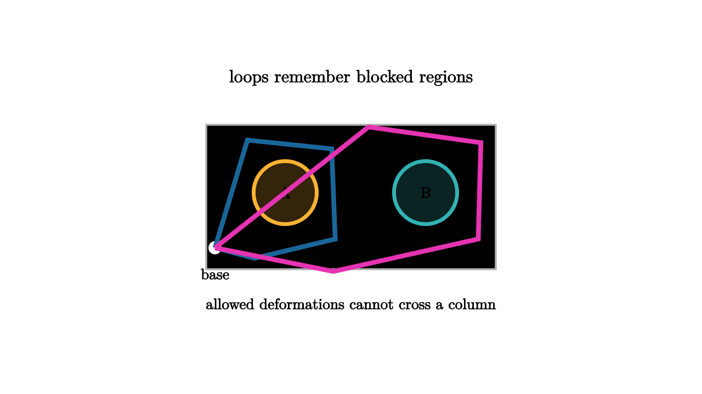

Fundamental Groups Record Allowed Loops
Imagine a small robot moving around a warehouse floor. The floor is open, except for two heavy columns bolted into place. The robot can drive around either column, weave between them, and return to its charging dock. A path that goes around the left column once feels different from a path that goes around the right column once. If the columns stay in place, no smooth adjustment of the route can turn one journey into the other.
That is the mental picture behind the fundamental group. A space is a world of possible positions. A loop is a journey that starts and ends at a chosen basepoint. Homotopy says when two journeys count as the same: one loop may slide into the other through allowed positions while the basepoint remains anchored. The fundamental group records these loop classes and multiplies them by travel order.

source
let soft = |col| alpha{0.2} col
let Obstacle = |pos, col, label| [
center{pos} fill{soft(col)} stroke{col, 4} Circle(0.36),
center{pos} Text(label, 0.62)
]
mesh scene = [
center{1.36u} Text("loops remember blocked regions", 0.72),
stroke{LIGHT_GRAY, 2} Rect([3.3, 1.65]),
Obstacle([-0.75, 0.05, 0], ORANGE, "A"),
Obstacle([0.85, 0.05, 0], TEAL, "B"),
center{[-1.55, -0.58, 0]} fill{WHITE} Circle(0.08),
center{[-1.55, -0.88, 0]} Text("base", 0.62),
stroke{BLUE, 5} Polyline([[-1.55, -0.58, 0], [-1.18, 0.65, 0], [-0.22, 0.55, 0], [-0.18, -0.48, 0], [-1.1, -0.7, 0], [-1.55, -0.58, 0]]),
stroke{MAGENTA, 5} Polyline([[-1.55, -0.58, 0], [-0.2, -0.85, 0], [1.45, -0.48, 0], [1.48, 0.62, 0], [0.2, 0.8, 0], [-1.55, -0.58, 0]]),
center{1.22d} Text("allowed deformations cannot cross a column", 0.62)
]The basepoint looks fussy at first. It is the charging dock in the story, the common place where all loops begin and end. It gives multiplication a clean meaning. If a is one loop and b is another, then ab means walk a, return to the dock, then walk b. The identity loop stays at the dock. The inverse of a loop is the same route traced backward.
After grouping loops by homotopy, those operations satisfy the group laws. Associativity comes from reparametrizing the timing of three journeys. The identity and inverse laws come from shrinking the waiting time and canceling a route followed by its reverse. The algebra is built from motion.
For a circle, the answer is $\pi_1(S^1) \cong \mathbb Z$. A loop is classified by winding number. For the warehouse floor with two columns, the answer resembles a free group on two generators. A route can wind around A, wind around B, reverse either one, and concatenate the resulting letters. The word ABA^{-1} describes a loop that winds around A, then B, then unwinds around A. Unless neighboring inverse letters cancel, the word carries route information.
source
let soft = |col| alpha{0.2} col
let Floor = [
stroke{LIGHT_GRAY, 2} Rect([3.35, 1.7]),
center{[-0.72, 0.05, 0]} fill{soft(ORANGE)} stroke{ORANGE, 4} Circle(0.34),
center{[0.84, 0.05, 0]} fill{soft(TEAL)} stroke{TEAL, 4} Circle(0.34),
center{[-1.55, -0.58, 0]} fill{WHITE} Circle(0.08)
]
let LoopA = |wide| stroke{BLUE, 5} Polyline([[-1.55, -0.58, 0], [-1.25, 0.55 + 0.12 * wide, 0], [-0.2, 0.52, 0], [-0.22, -0.48, 0], [-1.16, -0.68 - 0.08 * wide, 0], [-1.55, -0.58, 0]])
let LoopB = |wide| stroke{MAGENTA, 5} Polyline([[-1.55, -0.58, 0], [-0.25, -0.8, 0], [1.43, -0.5 - 0.1 * wide, 0], [1.46, 0.58, 0], [0.15, 0.78 + 0.08 * wide, 0], [-1.55, -0.58, 0]])
let Route = |mode| [
Floor,
keyframe_lerp([0 -> LoopA(0), 0.5 -> LoopA(1), 1 -> LoopB(1)], mode)
]
"A Loop"
mesh title = center{1.34u} Text("homotopy keeps the winding record", 0.68)
mesh route = Route(0)
mesh label = center{1.2d} Text("loop A winds once around the left column", 0.62)
play Fade(0.7)
play Write(0.7)
"Same Class"
route = Route(0.5)
play Lerp(1.1)
label = center{1.2d} Text("wiggling the route preserves its class", 0.62)
play Trans(0.6)
"Different Generator"
route = Route(1)
play Trans(1.0)
label = center{1.2d} Text("loop B records a different allowed journey", 0.62)
play Trans(0.6)The word "allowed" matters. Homotopy never asks whether two drawn curves look similar on the page. It asks whether a continuous movie exists inside the space. A loop around a missing point in the plane cannot shrink because the movie would need to pass through the missing point. A loop on the full plane can shrink because every intermediate curve stays inside the plane.
The fundamental group also listens to maps. If a continuous function f: X -> Y sends the basepoint of X to the basepoint of Y, then it sends loops in X to loops in Y. Homotopic loops stay homotopic after applying f, so f induces a group homomorphism
This functorial behavior is why the fundamental group can prove impossibility statements. If two spaces were homeomorphic, their fundamental groups would match up after choosing basepoints. A circle and an interval cannot be the same topological shape because their loop groups differ. A punctured plane and a full plane differ for the same reason.
The group is sensitive. It notices order in a way homology often smooths out. In a plane with two missing points, going around A then B can differ from going around B then A. The fundamental group can therefore catch noncommutative information. This is one reason it becomes central in knot theory, covering spaces, and the topology of configuration spaces.
There is also a practical habit here. When facing a space, ask what loops can do. Can a loop slide off a feature? Can it pass through a gap? Can two routes commute? Can one route be decomposed into smaller named moves? The answers are geometric, and the bookkeeping is algebraic.
The fundamental group is the first serious diary of motion. It records which journeys are allowed, which journeys cancel, and which obstacles force memory to remain.